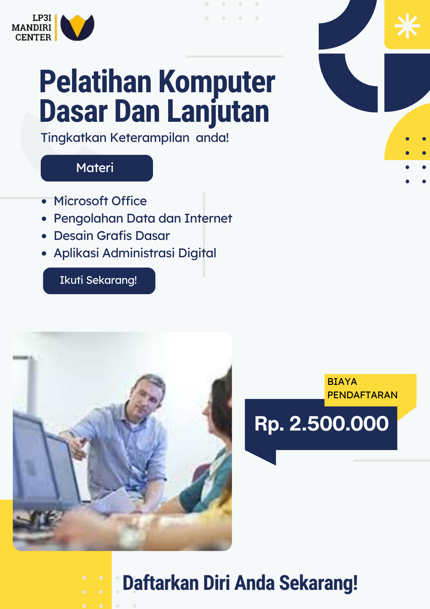

Pelatihan Komputer Dasar Dan Lanjutan
Pelatihan ini dirancang untuk membantu peserta memahami dan menguasai keterampilan komputer dasar hingga lanjutan secara profesional, modern, dan sesuai kebutuhan dunia industri. Program ini cocok bagi pemula maupun staf administrasi yang ingin meningkatkan kompetensinya.
Tujuan Pelatihan
- Meningkatkan keterampilan komputer untuk kebutuhan kerja perkantoran.
- Mampu mengelola dokumen digital dan data secara rapi dan aman.
- Menguasai pengolahan data dan pembuatan laporan dengan aplikasi office.
- Mampu menggunakan aplikasi pendukung administrasi dan komunikasi kerja.
Materi yang Dipelajari
- Pengantar komputer dan sistem operasi.
- Microsoft Word: pembuatan dokumen, laporan, dan surat menyurat.
- Microsoft Excel: pengolahan data, rumus dasar, dan laporan keuangan sederhana.
- Microsoft PowerPoint: pembuatan presentasi profesional.
- Penggunaan internet, email, dan kolaborasi online.
Sasaran Peserta
Pelatihan ini dapat diikuti oleh:
- Siswa / lulusan SMA/SMK yang ingin siap kerja.
- Fresh graduate yang ingin memperkuat skill komputer.
- Karyawan administrasi yang ingin meningkatkan produktivitas.
- Masyarakat umum yang ingin menguasai komputer untuk kebutuhan kerja.
Metode & Durasi Pelatihan
- Metode: Tatap muka / Hybrid.
- Durasi: 20–40 jam pelatihan (disesuaikan paket).
- Instruktur: Dosen & praktisi berpengalaman.